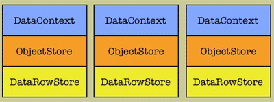

Cayenne implements an advanced caching mechanism that has a goal of improving application performance and ensuring data consistency both across Java applications and sessions within the same application. The following classes participate in the caching mechanism:
- DataObject
Any persistent object; tracks the version of snapshot it was last updated with.
- DataRow
Immutable snapshot of a database row. Has a VM-unique version identifier.
- ObjectStore
Stores DataObjects using ObjectIds as keys.
- DataRowStore
Stores snapshots as DataRows using ObjectIds as keys.
Levels of Caching
Cayenne implements the following levels of caching:
- Level 1 - No Cache Sharing
The DataContext keeps its own cache - data fetched from the database via a given DataContext is never shared with other local or remote DataContexts. Changes made on commit are not propagated to other DataContexts.

- Level 2 - Local VM Cache Sharing
Each DataDomain keeps the cache shared by all DataContexts in the same VM. Changes made via one of the DataContexts are propagated via a SnapshotEvent to other DataContexts in the same VM.

- Level 3 - Cross-VM Cache Sharing
Behaves just like Level 2, but also synchronizes caches across JVMs. SnapshotEvents are sent remotely via a preconfigured transport mechanism. Notification channels use the DataDomain name to identify which remote domains should receive the event.

Caching properties are configured using CayenneModeler for each application DataDomain. Application code is normally independent from a chosen level, i.e., it does not have to be changed when caching is reconfigured. Details on caching configuration are provided in the Modeler Guide.
Synchronizing ObjectStores using SnapshotEvents.
DataRowStore posts SnapshotEvents for any changes made to the cache. ObjectStore(s) using a given DataRowStore are automatically registered as listeners for SnapshotEvents and update their state accordingly. Application objects can also take advantage of the events by implementing SnapshotEventListener interface and registering with EventManager
SnapshotEventListener customListener = ...
DataDomain domain = Configuration.getSharedConfiguration().getDomain();
DataRowStore cache = domain.getSharedSnapshotCache();
domain.getEventManager().addListener(
customListener,
"snapshotsChanged",
SnapshotEvent.class,
cache.getSnapshotEventSubject());
 | Upgrading to Cayenne 1.2 and Newer
Cayenne 1.1 used a singleton EventManager accessible via EventManager.getDefaultManager(). Note that now EventManager is obtained from DataDomain or DataContext. Make sure that you register your listeners with an appropriate EventManager. |
Concurrent Updates of the Same DataObject.
If two or more users update their local copies of the same object, Cayenne implements the following behavior:
- Whenever a local modification of an object is detected, its snapshot is retained by ObjectStore, so that any changes to the underlying DataRowStore could not affect modification process of this object.
- On commit, an UPDATE query is built based on retained snapshot, not the one currently cached in DataRowStore (this may or may not be the same DataRow). If the changes were made to a different set of attributes, this allows concurrent modification of the same object by different users without overwriting each other's changes.
- Due to concurrency issues discussed above, if a snapshot version conflict occurs, DataRowStore removes a given snapshot from the cache to avoid dealing with concurrency effects on merging.
.